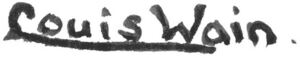

Trade Mark Journal No.2025/039 26 September 2025
WO0000001875396 (14,18,25)
Office of origin: Italy
Date of International Registration:12 November 2024
Date of designation in the UK:
12 November 2024

The mark is formed by the words "LOUIS WAIN." WRITTEN IN SPECIAL CHARACTERS. The lower part of the letter "L" continues to emphasize other letters of the word "Louis Wain". A dot/point is slightly spaced after the word "Louis Wain".
International priority date claimed: 13 May 2024
(Italy)
(302024000077398)
- Class 14
- Boxes for timepieces; boxes of precious metal; bracelets; bracelets of precious metal; brooches; chronographs for use as timepieces; chronometers; clock and watchmaking pendulums; clock dials; clock hands; clock housings; clocks and parts therefor; clocks incorporating radios; cufflinks; diamond; diamond chains; diamonds; ear clips; ear studs; gems; gold; gold alloy ingots; gold and its alloys; gold ingots; gold ore; gold thread jewelry; gold, unworked or semiworked; gold, unwrought or beaten; jewel cases of precious metal; jewel chains; jewel pendants; jewels; neck chains; pearls; pendants; platinum; platinum alloy ingots; platinum and its alloys; platinum ingots; precious and semiprecious gems; precious gemstones; rhinestones for making jewelry; rings; silver; silver alloy ingots; silver and its alloys; silver ingots; silver ore; silver thread jewelry; silver, unwrought or beaten; watch and clock springs; watch bands and straps; watch bracelets; watch cases being parts of watches; watch chains; watch clasps; watch crowns; watch crystals; watch faces; watch fobs; watch glasses; watch hands; watch movements; watch winders; watches and clocks; watches and jewelry; watches for outdoor use; watches for sporting use; watches made of precious metals or coated therewith; watches, clocks, jewellery and imitation jewellery; alarm clocks; badges of precious metal; bangle bracelets; bead bracelets; body-piercing rings; bottle caps of precious metals; cabochons; charm bracelets; charms for collar jewelry and bracelet; charms for key rings or key chains; chronometric instruments and watch movements; clock and watch hands; clocks and watches; collectible coins; cuff bracelets; cuff links of precious metal; desk clocks; dress watches; equestrian watches; identification bracelets; jewellery boxes; jewellery chains; jewellery and precious stones; jewellery, clocks and watches; jewelry boxes; jewelry brooches; jewelry cases; jewelry chains; jewelry watches; jewelry, namely, stone pendants; key holders of precious metals; mechanical and automatic watches; musical jewelry boxes; parts for watches; pocket watches; precious jewels; precious and semiprecious stones; statues of precious metals; synthetic diamonds; synthetic precious stones; table clocks; clocks; wrist watches.
- Class 18
- Baby carriers, walking sticks, conference bags, conference wallets, motorised suitcases, wheeled suitcases, leather labels, randsels [Japanese school bags], saddle pads for horses, credit card holders [wallets], bags, clothes for pets, chamois leathers other than for cleaning, vanity cases, trunks, cases of leather or leatherboard, knitted bags, boxes of leather or leatherboard, animal skins, leather valves, suitcase handles, travelling bags [of leather], briefcases, envelopes [leather goods], saddlery, horse saddles, baby carriers, sports bags, leather furniture coverings, suitcases; key cases [leather goods], travel clothes cases, bags; sun umbrellas, furs [animal skins], wallets, shopping bags with wheels, reusable shopping bags, document cases, beach bags, handbags, travel bags, backpacks; collars for animals; rain suits for dogs [clothing for animals]; baby slings; walking sticks; school bags; card holders [wallets]; business card holders; luggage tags; purses; covers for animals; collars for cats, luggage, bags, coats for cats.
- Class 25
- A-shirts; shorts, trousers, overcoats, gloves [clothing], scarves, foulards [kerchiefs], ceremonial scarves, knitted garments, espadrilles, headgear, gloves, latex clothing, rash guards, clothing with integrated LEDs, face coverings [clothing], not for medical or sanitary purposes, anti-sweat underwear, sweat-absorbent socks, baby panties; tights, ankle boots, shower caps, handkerchiefs [clothing], paper hats [clothing], sleep masks, aprons, dresses, pinafores, leggings [trousers], ski gloves, culottes, headbands [clothing], parkas, ski boots, bodysuits [underwear], bandanas [scarves], gymnastics clothing, imitation leather clothing, leather clothing, t-shirts, jackets, swimsuits, bathrobes, shoes, beach shoes, pyjamas, dresses, clogs [footwear], sandals, panties [briefs], bras, jackets, jerseys [clothing], skirts, layettes, liveries, sports shirts, slippers, furs, beach costumes, waterproof clothing, gym shoes, shirts, short-sleeved shirts, articles of clothing, hats, tights, overalls [clothing], suits [suits], earmuffs [clothing], ties, hoods [garments], belts [clothing], shawls, dressing gowns, sweaters, socks, caps being headgear, hosiery, boots, braces, undershirts, underwear, underpants, culottes [underwear], footwear, bath sandals, bath shoes, stockings, caps.
AM MOBILITY LLC
Cristiano Zocchi